1. Ласточкино гнездо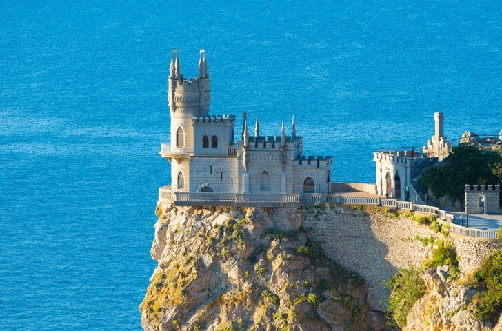 |
Известный архитектурный памятник Южного берега Крыма, одна из самых известных достопримечательностей полуострова. В XIX в. здесь располагалась частная резиденция отставного генерала, позже земля перешла в руки немецкого барона Штейнгеля, при котором в 1911 году был построен дворец в неоготическом стиле. После окончания Гражданской войны Ласточкино гнездо пришло в упадок и только в 1960-х гг. началось восстановление. |
|
|---|---|---|
2. Ливадийский дворец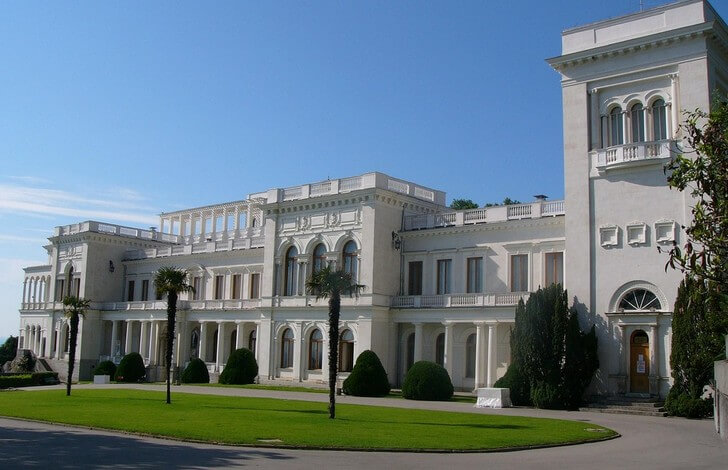 |
Дворцовый комплекс с ландшафтным парком в поселке Ливадия. Первые постройки появились здесь в начале XIX века. После 1861 года Ливадийский дворец был продан царской семье и стал использоваться как дача. Дошедшее до нашего времени белокаменное здание построено в начале XX века. Во время второй мировой войны вся территория парка была разрушена, дворец лежал в руинах. Его восстановили перед началом Ялтинской конференции в феврале 1945 года. |
|
3. Воронцовский дворец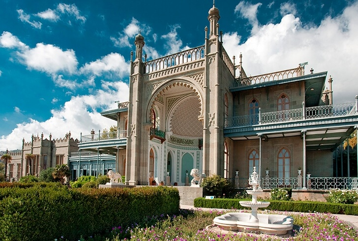 |
Музей-заповедник у подножья горы Ай-Петри в поселке Алупка. Комплекс построен в первой половине XIX века для графа Михаила Воронцова по проекту английского архитектора Эдварда Блора (он принимал участие в строительстве шотландского замка Вальтера Скотта и Букингемского дворца). Западная часть строения выполнена в стиле английских Тюдоров, южный фасад представляет собой образец мавританской архитектуры. |
|
4. Массандровский дворец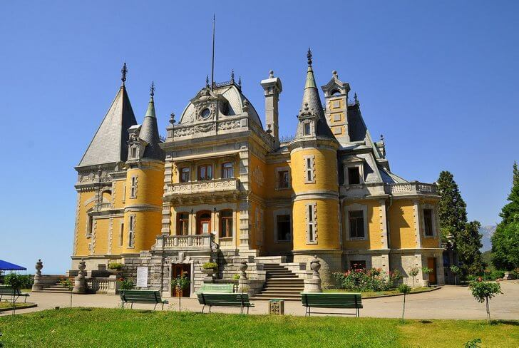 |
Еще один крымский дворец конца XIX века неподалеку от Ялты. Изначально принадлежал семье Воронцовых, но затем был куплен для императорской династии. Замок построен с элементами стиля времен французского короля Людовика XIII, строительными работами руководил архитектор М. Месмахер. В советские годы дворец использовался как дача для первых лиц государства, сейчас на территории располагается музей. |
|
5. Ханский дворец в Бахчисарае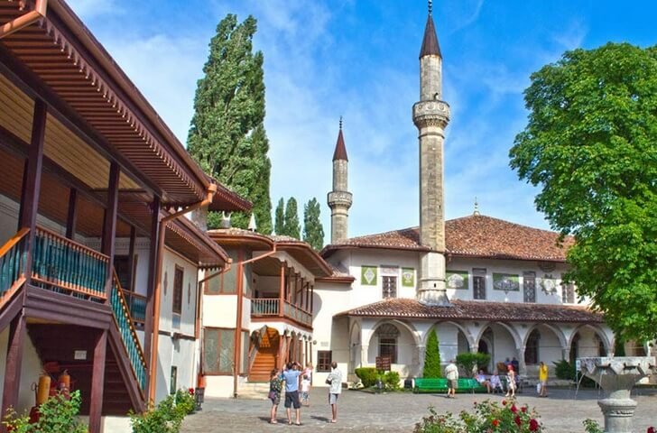 |
Бывшая резиденция крымских ханов, возведенная в XVI веке. Главная архитектурная мысль комплекса – передать представление крымских татар о рае на земле. Несколько поколений правителей ханской династии Гиреев проживали здесь, каждый пытался расширить и дополнить дворцовый комплекс. В XVIII– XIX вв. дворец горел, перестраивался, ремонтировался и почти утратил первоначальный вид. Только в XX веке удалось восстановить оригинальные интерьеры. |
|
6. Гора Ай-Петри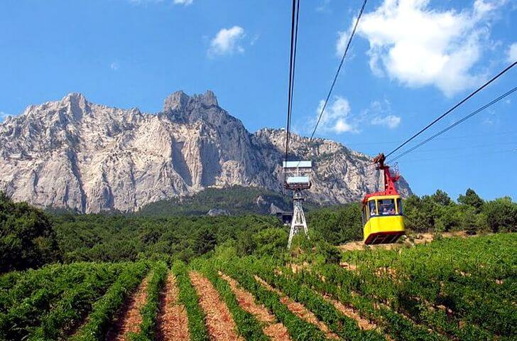 |
Одна из горных вершин Южного берега Крыма. Относится к Ялтинскому горно — лесному заповеднику. Раньше здесь располагался греческий монастырь Св. Петра. Через гору проходит канатная дорога почти 3 км. в длину, которая признана одной из самых протяженных в Европе. Во время подъема на вершину в кабинке, турист получает возможность полюбоваться живописными видами с высоты птичьего полета. |
|
7. Белая скала Ак-Кая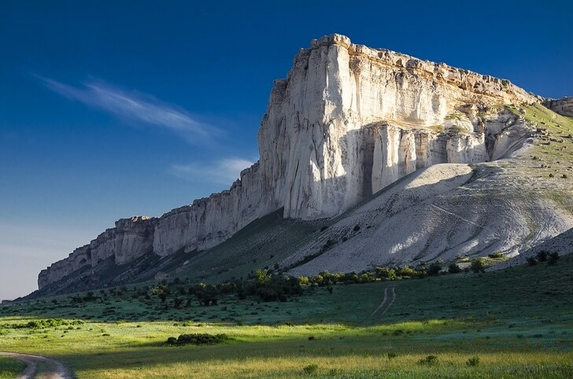 |
Природный и археологический памятник Крыма, находится в долине р. Биюк-Карасу. Скала является массивом, сложенным из белых пород известняка. У подножья Ак-Кая были найдены стоянки первобытного человека, остатки орудий туда и окаменелые кости. На вершине были раскопаны древние скифские курганы. Рядом со скалой растет дуб возрастом 800 лет. Считается, что под этим деревом Суворов вел переговоры с представителем турецкого султана. |
|
8. Аю-Даг (Медведь-гора)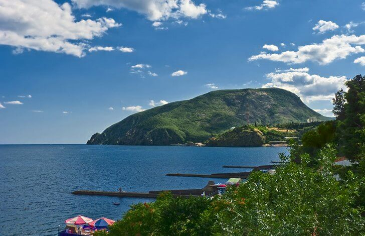 |
Историко-археологический и природный памятник полуострова, где сохранились остатки укрепленного городища VIII-XV вв. Одно из преданий гласит, что гора – это окаменелый огромный медведь, который скитался по долине, крушил все вокруг и успокоился на берегу по велению морского бога. На территории заповедника обитает более десятка видов редких животных, занесенных в Красную книгу. |
|
9. Мраморная пещера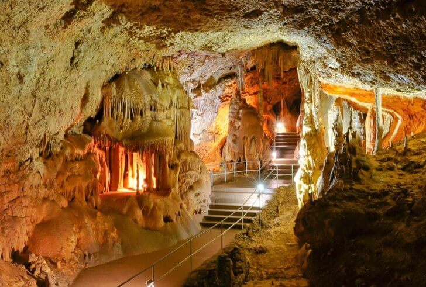 |
Карстовая пещера неподалеку от поселка Мраморное. Возраст образования – несколько миллионов лет. До сих пор пещера продолжает расширяться, так как продолжаются процессы формирования молодых Крымских гор. В пещере несколько больших залов, через которые проложены экскурсионные маршруты протяженностью около 1,5 км. Здесь можно полюбоваться на редчайшие виды кристаллов и сталактитов. | |
10. Пещерный город Чуфут-Кале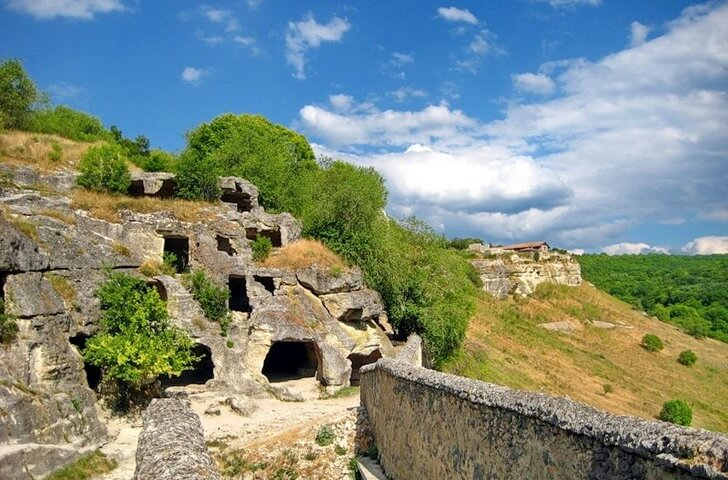 |
Город-крепость, расположенный на высокогорном плато недалеко от Бахчисарая. Дорога к пещерному городу проходит через территорию скального Свято-Успенского монастыря. Считается, что Чуфут-Кале появился в V-VI вв. как укрепление на окраине византийских владений. В XIII-XIV вв. город стал центром небольшого княжества – вассала Крымского ханства, где начали селиться представители народа караимов. В XIX веке Чуфут-Кале покинули последние жители. |
|
11. Херсонес Таврический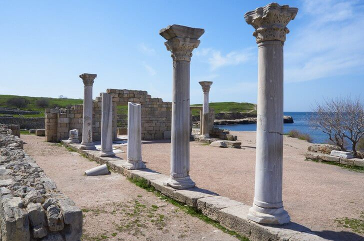 |
Древнегреческий город, основанный в V веке до н.э. Впоследствии стал крупным и богатым центром всей греческой колонии на полуострове. Со II века до н.э. находился в зависимости от античного Боспорского царства, позже стал вассалом Рима. Херсонес также является одной из колыбелей христианства – первые последователи Христа обосновались здесь в I веке. В X веке в Херсонесе принял крещение князь Киевской Руси Владимир. |
|
12. Генуэзские крепости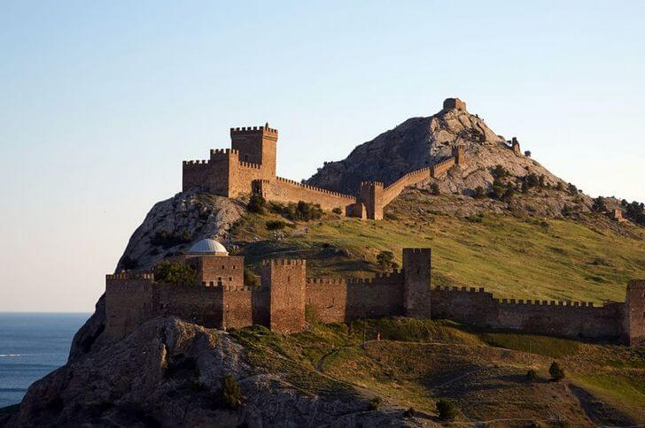 |
Три укрепленных форта генуэзских мореплавателей, расположенные в Балаклаве, Судаке и Феодосии. В средние века они были черноморскими форпостами могущественной Генуи и использовались для защиты с моря. По договору с татарами в XIV веке генуэзцы присоединили к своим владениям территорию от современной Феодосии до Фороса. Область называлась Генуэзская Газария. В XV веке крепости перешли в руки Османской империи. |
|
13. Форосская церковь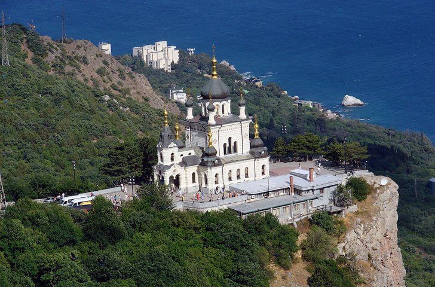 |
Другое название храма – церковь Воскресения Христова. Она была построена в конце XIX века на скале, возвышающейся на 400 метров над уровнем моря. Александр III отдал приказ построить храм в память о крушении поезда, при котором чуть на погибла вся семья императора. Через несколько лет после победы Революции 1917 года в здании разместили ресторан, просуществовавший до начала 70-х гг. В 90-е гг. храм был восстановлен на средства украинского правительства. |
|
14. Успенский пещерный монастырь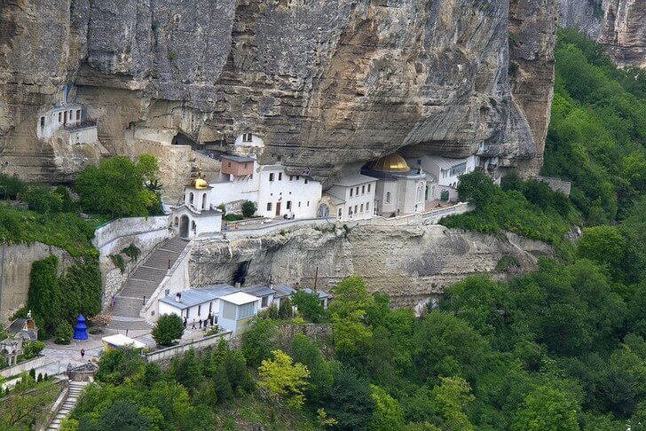 |
Действующий мужской монастырь, предположительно основанный в VIII веке н.э. беглыми византийскими монахами. Обитель существовала долгие века, во времена османского владычества даже крымский хан приезжал сюда воздать почести местным святыням. После установления Советской власти монастырь закрыли, землетрясение 1927 года разрушило постройки. Возрождения и реставрация начались только в 1993 году. |
|
15. Памятник затопленным кораблям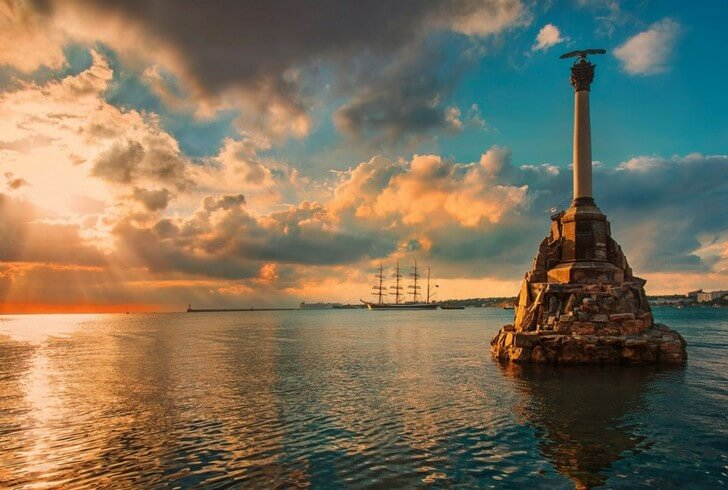 |
Монумент в водах моря на набережной Севастополя, считается символом города. Установлен в честь событий середины XIX века, когда в Севастопольской бухте были специально затоплены российские корабли, дабы преградить путь англо-французскому флоту. Чтобы избежать сражения (так как флот неприятеля был более мощным и лучше вооруженным), князь Меньшиков принял решение затопить корабли, но не подпустить вражеские войска к городу. |
|
16. Музей панорама «Оборона Севастополя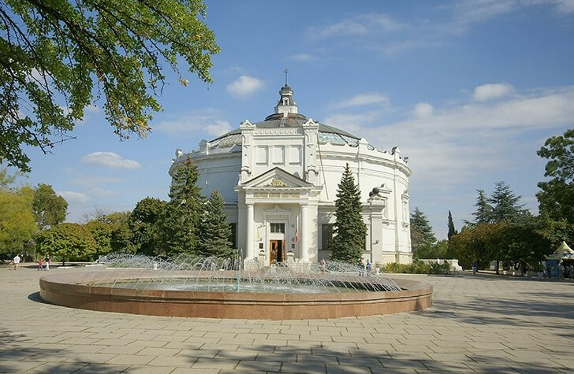 |
Исторический памятник, посвященный событиям Крымской войны 1853-1856 гг. Это монументальная панорама обороны Севастополя мастера батальной живописи Франца Алексеевича Рубо, расположенная в здании округлой формы. Работа над полотном велась с 1901 года. Ф.А. Рубо создавал свой шедевр с помощью студентов Баварской академии художеств и нескольких немецких живописцев. |
|
17. Объект 825ГТС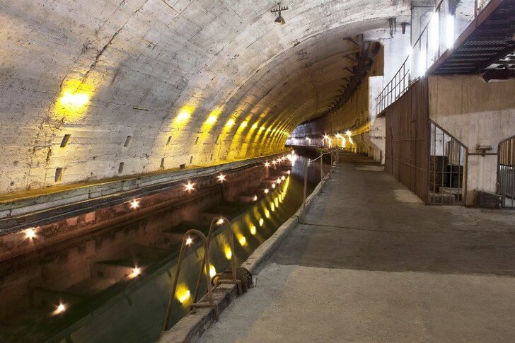 |
Ранее секретный военный объект в Балаклаве, бывшая подземная база подводных лодок. Во времена СССР являлся одним из самых засекреченных в СССР. Долгие годы Балаклавская бухта не была обозначена на картах. После падения СССР объект был запущен и разграблен, только в 2004 году правительство Украины организовало там музей истории подводного флота. После перехода Крыма под российскую юрисдикцию власти РФ планируют разместить там новую базу. |
|
18. Балаклавская бухта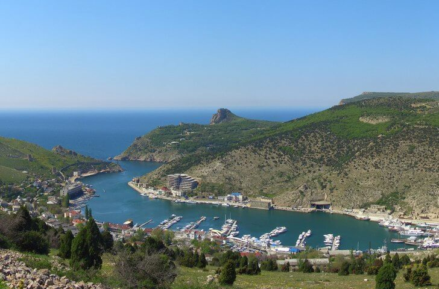 |
Небольшая бухта с причудливо изрезанными и живописными берегами, где согласно Гомеровской «Одиссее» побывал легендарный мореплаватель. На берегах бухты стоит одна из генуэзских крепостей. Считается, что первые поселения возникли здесь в VIII-VI вв. до н.э. Во времена Крымской войны в бухте располагалась база англичан, в советское время – засекреченная стоянка подводных лодок. |
|
19. Большой каньон Крыма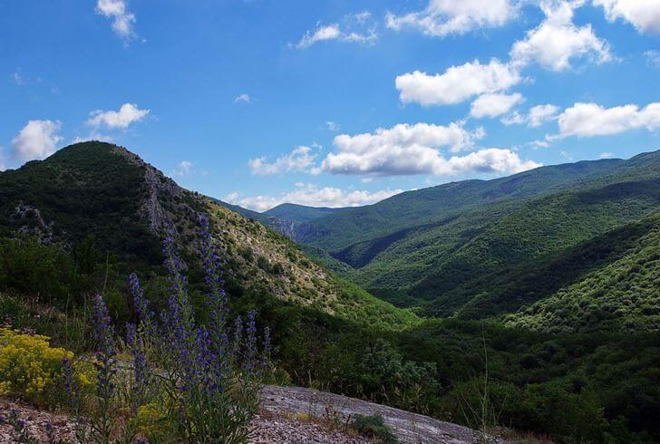 |
Ландшафтная достопримечательность Крымского полуострова, государственный заказник с 1974 года. Каньон представляет собой широкую трещину в скальной породе, образовавшуюся в процессе формирования Крымских гор. Вдоль расщелины располагается несколько мысов-утесов, по дну течет р. Аузун-Узень. По дну каньона и в окрестностях проходят несколько туристических маршрутов со смотровыми площадками. |
|
20. Долина привидений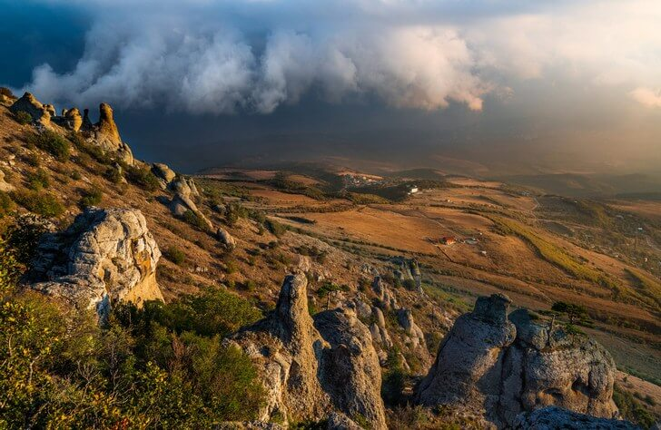 |
Скопление скал на западном склоне Южной гряды горного массива Демерджи. В долине разбросано более 100 каменных скальных глыб разных размеров, самые большие достигают 25 метров в высоту. На рассвете и во время заката камни отбрасывают причудливые тени, которые движутся и переплетаются между собой. Именно поэтому место получило поэтичное название «Долина приведений». |